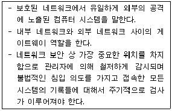
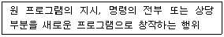

네트워크관리사-1급 (2009-09-27 기출문제)
1과목: TCP/IP
1. TCP/IP 계층 중 다른 계층에서 동작하는 프로토콜은?
- IP
- ICMP
- UDP
- IGMP
(정답률: 알수없음)

2. IP Address 할당에 대한 설명으로 옳지 않은 것은?
- 198.34.45.255는 개별 호스트에 할당 가능한 주소이다.
- 127.0.0.1은 로컬 Loopback으로 사용되는 특별한 주소이다.
- 172.16.0.0은 네트워크를 나타내는 대표 주소이므로 개별 호스트에 할당할 수 없다.
- 220.148.120.256은 사용할 수 없는 주소이다.
(정답률: 알수없음)
3. IP Address "138.212.30.25"가 속하는 Class는?
- A Class
- B Class
- C Class
- D Class
(정답률: 알수없음)
4. IP Address "128.10.2.3"을 바이너리 코드로 전환하면 어떤 값이 되는가?
- 11000000 00001010 00000010 00000011
- 10000000 00001010 00000010 00000011
- 10000000 10001010 00000010 00000011
- 10000000 00001010 10000010 00000011
(정답률: 알수없음)
5. 네트워크상에서 기본 서브넷 마스크가 구현될 때 IP Address가 203.240.155.32인 경우 아래 설명 중 올바른 것은?
- Network ID는 203.240.155이다.
- Network ID는 203.240 이다.
- Host ID는 155.32가 된다.
- Host ID가 255일 때는 루프백(Loopback)용으로 사용된다.
(정답률: 알수없음)
6. 라우팅 프로토콜이 아닌 것은?
- RIP
- PPP
- IGRP
- EGP
(정답률: 알수없음)
7. IP 데이터그램 전달을 위한 주소 형태 중 IPv4와 비교하여 IPv6에서만 제공되는 서비스는?
- Unicasting
- Multicasting
- Broadcasting
- Anycasting
(정답률: 알수없음)
8. IPv6 중 그룹 내에 가장 가까운 인터페이스를 가진 호스트 사이의 통신이 가능한 형태는?
- Unicast Type
- Anycast Type
- Multicast Type
- Broadcast Type
(정답률: 알수없음)
9. IP Address에 대한 설명 중 옳지 않은 것은?
- IP Address는 32bit로 구성되어 있다.
- IP 는 Server와 FTP로 이루어진다.
- IP Address의 효율적인 사용을 위해 한 개의 주소를 여러 개의 주소로 나누어서 사용하는 Subnet Mask가 이용된다.
- 모든 컴퓨터는 고유한 IP Address를 갖는다.
(정답률: 알수없음)
10. FTP 서비스를 통해 각종 실행파일, 압축파일, hwp파일, 데이터 파일 등을 전송할 때 사용하는 명령은?
- ASCII
- cdup
- bin(또는 binary)
- get
(정답률: 알수없음)
11. DNS 메시지 헤더 형식에 대한 설명 중 옳지 않은 것은?
- QDCOUNT : 질의 섹션에서 등록수를 명기하는 16비트 영역
- ANCOUNT : 응답 섹션에서 반환된 자원 기록들의 수를 명기하는 16비트 영역
- NSCOUNT : 절단 기록 섹션에서의 네임서버 자원 기록들의 수를 명기하는 16비트 영역
- ARCOUNT : 추가 기록 섹션에서 자원 기록들의 수를 명기하는 16비트 영역
(정답률: 알수없음)
12. TCP/IP 망을 기반으로 하는 다양한 호스트 간 네트워크 상태 정보를 전달하여 네트워크를 관리하는 표준 프로토콜은?
- FTP
- ICMP
- SNMP
- SMTP
(정답률: 알수없음)
13. 도메인 이름으로 사용할 수 없는 것은?
- good_boy.co.kr
- goodboy.co.kr
- 13-19.co.kr
- ijung123.co.kr
(정답률: 알수없음)
14. TFTP에 대한 설명으로 올바른 것은?
- TCP/IP 프로토콜에서 데이터의 전송 서비스를 규정한다.
- 인터넷상에서 전자우편(e-mail)의 전송을 규정한다.
- UDP 프로토콜을 사용하여 두 호스트 사이에 파일 전송을 가능하게 해준다.
- 네트워크의 구성원에 패킷을 보내기 위한 하드웨어 주소를 정한다.
(정답률: 알수없음)
15. 무선 LAN에 관한 IEEE표준은?
- IEEE802.8
- IEEE802.9
- IEEE802.10
- IEEE802.11
(정답률: 75%)
16. ICMP 프로토콜의 기능과 거리가 먼 것은?
- 여러 목적지로 동시에 보내는 멀티캐스팅 기능이 있다.
- 두 호스트간의 연결의 신뢰성을 테스트하기 위한 반향과 회답 메시지를 지원한다.
- ‘ping’ 명령어는 ICMP를 사용한다.
- 원래의 데이터그램이 TTL을 초과하여 버려지게 되면 시간 초과 에러 메시지를 보낸다.
(정답률: 알수없음)
2과목: 네트워크 일반
17. IP Address를 알고 MAC Address를 모를 경우 데이터 전송을 위해 MAC Address를 알아내는 프로토콜은?
- ARP
- RARP
- ICMP
- IP
(정답률: 알수없음)
18. 두 전력레벨의 차이를 측정하는 전송단위는?
- dB
- dBm
- dBW
- dBmV
(정답률: 알수없음)
19. 아날로그변조에서 불연속 변조에 해당하는 것은?
- FM
- AM
- PM
- PCM
(정답률: 알수없음)
20. ITU-T가 X.25 패킷 교환망의 데이터 링크 프로토콜로 채택한 것은?
- ADCCP
- HDLC
- LAP-B
- LAP-D
(정답률: 알수없음)
21. 네트워크의 각 단말이 각각 1개의 회선에서 1대1로 접속되어 있는 경우의 데이터링크 확립 방식은?
- 폴링방식
- 셀렉팅 방식
- 컨텐션 방식
- 복합방식
(정답률: 알수없음)
22. 여러 개의 타임 슬롯(Time Slot)으로 하나의 프레임이 구성되며 각 타임 슬롯에 채널을 할당하여 다중화 하는 것은?
- TDMA
- CDMA
- FDMA
- CSMA
(정답률: 알수없음)
23. 100VG Any LAN을 구성할 때 주로 사용되는 토폴로지는?
- 링형(Ring)
- 성형(Star)
- 버스형(Bus)
- 메쉬형(Mesh)
(정답률: 알수없음)
24. 155Mbps 정도의 대역폭을 지원하며 동시에 음성, 비디오, 데이터 통신을 무리 없이 지원하기 위한 가장 좋은 방법은?
- Frame Relay
- T1
- ATM
- X.25
(정답률: 알수없음)
25. 경량화를 무기로 무선 LAN과 경쟁을 하고 있는 Bluetooth에 대한 설명으로 옳지 않은 것은?
- 모바일 단말과 주변기기를 연결하는 단거리 무선규격이다.
- 한 대의 모뎀을 복수의 PC로 공유하는 등 1대n 통신이 가능하다.
- 같은 프로파일을 탑재한 장비간이면 자동 인식하여 접속할 수 있다.
- 동시 이용이 가능한 채널수는 14채널로 무선 LAN에 비해 적다.
(정답률: 알수없음)
26. ITU-TS에서 권고한 ISDN 가입자의 기본 채널 구조인 2B+D 접속에서 전송 정보량은?
- 80Kb/s
- 128Kb/s
- 144Kb/s
- 256Kb/s
(정답률: 알수없음)
27. 데이터 링크 계층의 프로토콜이다. 이들 중 비트 방식의 프로토콜로 옳지 않은 것은?
- HDLC
- SDLC
- ADCCP
- BSC
(정답률: 알수없음)
3과목: NOS
28. Windows 2000 Server에서 "C:\Hidden"이란 폴더를 공유하려고 하지만 모든 사용자가 쉽게 볼 수 없는 숨은 공유 폴더로 만들고 싶을 때 폴더 이름으로 올바른 것은?
- Hidden$
- Hidden#
- $Hidden
- #Hidden
(정답률: 20%)
29. Windows 2000 Server에서 “ICQA2007”라는 이름의 서버에 익명 액세스를 허용할 때, 이들 익명 사용자에 대한 자원의 제한은 어떤 계정을 통해 가능한가?
- Anonymous
- IUSER_ICQA2007
- Anonymous_ICQA2007
- Guest_ICQA2007
(정답률: 알수없음)
30. 호스트 헤더방식을 사용하여 2개의 가상 서버를 설정할 경우 필요한 최소 IP Address 수는?
- 1개
- 2개
- 3개
- 가상서버를 설정할 수 없다.
(정답률: 알수없음)
31. DNS 데이터베이스 레코드의 유형 중 연결이 옳지 않은 것은?
- MX - 메일 교환기 호스트의 메시지 라우팅을 제공한다.
- A - 호스트 이름을 IPv4 주소로 매핑한다.
- CNAME - 주소를 호스트이름으로 매핑한다.
- NS - 이름 서버를 나타낸다.
(정답률: 59%)
32. Windows 2000 Server를 FTP 서버로 운영하는 중, 특정 IP를 사용하는 사용자가 지속적으로 불법자료를 업로드 하는 것을 로깅 파일을 통해 확인하였다. 이를 차단하기 위해 사용하는 탭은?
- FTP 사이트 탭
- 보안 계정 탭
- 홈 디렉터리 탭
- 디렉터리 보안 탭
(정답률: 알수없음)
33. Windows 2000 Server에서 IP Address를 NetBIOS 이름으로 맵핑하기 위해 윈도우가 사용하는 파일로써 확장자가 없거나 SAM이라는 확장자를 가지는 텍스트 파일은?
- DHCP
- DNS
- HOSTS
- LMHOSTS
(정답률: 알수없음)
34. Windows 2000 Server의 Active Directory 기능으로 옳지 않은 것은?
- 정보 보안
- 정책 기반 관리
- 확장성
- DNS와의 분리
(정답률: 알수없음)
35. Windows 2000 Server의 Active Directory를 사용할 때 도메인 컨트롤러(서버) 사이에서 복제되는 디렉터리 데이터의 범주에 속하지 않는 것은?
- Domain Data
- Configuration Data
- Schema Data
- User Data
(정답률: 알수없음)
36. Windows 2000 Server에서 감사정책을 설정하고 기록을 남길 수 있는 그룹은?
- Administrators
- Security Operators
- Backup Operators
- Audit Operators
(정답률: 알수없음)
37. 운영체제의 종류로 옳지 않은 것은?
- Linux
- UNIX
- Windows 2003
- WWW
(정답률: 알수없음)
38. Windows 2000 Server의 파일 시스템에 대한 설명으로 옳지 않은 것은?
- NTFS 5.0 에서는 파일 및 디렉터리별로 사용권한을 설정하여 보호하고 파일 자체를 암호화 하여 보관할 수 있다.
- Windows NT는 기본적으로 FAT32를 지원하고 OSR2에서는 FAT16을 지원한다.
- FAT16이나 FAT32를 사용하던 파티션은Convert 명령어를 사용하여 NTFS 파일 시스템으로 변경할 수 있다.
- 디스크의 클러스터의 사용 상황을 기억하는 테이블이 FAT 이다.
(정답률: 알수없음)
39. vi 에디터에서 화살표(방향키) 대신 사용할 수 있는 키가 아닌 것은?
- k
- l
- h
- o
(정답률: 알수없음)
40. Microsoft SQL Server 유틸리티 중 데이터베이스 환경설정을 제어하는 것은?
- SQL 엔터프라이즈 매니저
- SQL 쿼리 분석기
- ISQL_w
- SQL 서비스 매니저
(정답률: 알수없음)
41. Exchange의 서비스에 대한 설명으로 옳지 않은 것은?
- MS Exchange IMAP4 : IMAP4 프로토콜을 지원한다.
- MS Exchange Information Store : 메일과 뉴스를 저장하는 역할을 한다.
- MS Exchange NNTP : 유즈넷 뉴스 그룹 프로토콜을 지원한다.
- MS Exchange POP3 : POP3 프로토콜을 지원한다.
(정답률: 알수없음)
42. httpd.conf의 내용 중에서 '인증 정보'가 들어있는 경우가 빈번하므로 보안상의 이유로 이 파일에 대한 접근을 불허해야하는 디렉터리의 접근제어 정보 내용을 포함한 파일의 이름이 가지는 확장자는?
- [.types]
- [.mime]
- [.inputaccess]
- [.htaccess]
(정답률: 알수없음)
43. Windows 프로그램을 자동으로 설치하는 Setup과 유사한 기능을 가진 Linux의 설치 툴은?
- Installer
- RPM
- TAR
- GCC
(정답률: 알수없음)
44. 일반적으로 icqa@icqa.or.kr 이라는 전자우편 주소를 가진 사람이 웹 브라우저를 이용하여 자신의 홈 디렉터리에 파일을 업로드하려고 할 때, 적절한 URL은?
- http://icqa@icqa.or.kr
- http://icqa.or.kr/~icqa
- ftp://icqa@icqa.or.kr
- ftp://icqa.or.kr/~icqa
(정답률: 알수없음)
45. 아파치(Apache) 웹 서버 운영시 서비스에 필요한 여러 기능들을 설정하는 파일은?
- httpd.conf
- htdocs.conf
- index.php
- index.cgi
(정답률: 47%)
4과목: 네트워크 운용기기
46. 데이터의 무결성을 구현하는 방법 중 소프트웨어적인 기법만으로 구현 가능한 것은?
- 디스크 미러링(Disk Mirroring)
- 서버의 이중화(Dual Server)
- 핫 스탠바이(Hot Standby)
- 리커버리 블록(Recovery Block)
(정답률: 알수없음)
47. 오류 제어에서 Parity가 있는 디스크 스트래핑 방법은?
- RAID 0
- RAID 1
- RAID 3
- RAID 5
(정답률: 알수없음)
48. Provider가 제공하는 WAN Service지역에서 고객 측으로부터 가장 가까운 곳에 위치한 스위칭 설비를 가리키는 WAN용어는?
- CPE
- Demarcation
- DET
- Local Loop
(정답률: 알수없음)
49. IP Standard Access List의 Access Number 범위는?
- 1~99
- 100~199
- 800~899
- 900~999
(정답률: 알수없음)
50. Ethernet에서 UTP(10BaseT) Cable의 최대 Segment 길이는?
- 200m
- 185m
- 500m
- 100m
(정답률: 알수없음)
5과목: 정보보호개론
51. 아래 내용은 방화벽의 구성 요소 중 무엇에 대한 설명인가?

- Application Level Firewall
- Dual-home Gateway
- Secure Gateway
- Bastion Host
(정답률: 알수없음)
52. "정보보호 표준용어" 대한 설명이 올바른 것은?
- 대칭형 암호 시스템(Symmetric Cryptographic System) : 비밀 함수를 정의하는 비밀 키와 공개 함수를 정의하는 공개 키들의 쌍
- 복호(Decipherment) : 시스템 오류 이후에 시스템과 시스템 내의 데이터 파일을 재 저장하는 행위
- 공개키(Public Key) : 정보시스템을 사용하기 전 또는 정보를 전달할 때, 사용자를 확인하기 위해 부여된 보안 번호
- 데이터 무결성(Data Integrity): 데이터를 인가되지 않은 방법으로 변경할 수 없도록 보호하는 성질
(정답률: 알수없음)
53. 용어 설명이 바르지 않은 것은?
- 접근 통제 : 비인가자가 컴퓨터 시스템에 액세스하지 못하도록 하는 것
- 인증 : 전문 발신자와 수신자를 정확히 식별하고 제삼자가 위장하여 통신에 간여할 수 없도록 하는 것
- 부인 방지 : 데이터에 불법적으로 접근하는 것을 막기 위한 것
- 무결성 : 인가자 이외는 전문을 변경할 수 없게 하는 것
(정답률: 알수없음)
54. Windows 2000 Server의 보안 감사 정책 설정 시 예상되는 위협으로 볼 수 없는 것은?
- 바이러스 침입
- 파일에 대한 부적절한 접근
- 프린터에 대한 부적절한 접근
- 임의의 하드웨어 장치 설정
(정답률: 알수없음)
55. Linux의 사용자 보안에 관한 사항으로 옳지 않은 것은?
- 사용자 계정을 만들 때 필요 이상의 권한을 부여해서는 안 된다.
- root의 path 맨 앞에 '.'을 넣어서는 안 된다.
- 서버에 불필요한 사용자를 없앤다.
- 사용자 삭제시 "/etc/passwd" 파일에서 정보를 직접 삭제한다.
(정답률: 알수없음)
56. 사용자 계정 생성 시 사용자의 비밀번호 정보가 실제로 저장되는 곳은?
- /usr/local
- /etc/password
- /etc/shadow
- /usr/password
(정답률: 알수없음)
57. 방화벽에서 내부 사용자들이 외부 FTP에 자료를 전송하는 것을 막고자 한다. 외부 FTP에 Login 은 허용하되, 자료전송만 막으려고 할 때 필터링 할 포트 번호는?
- 23
- 21
- 20
- 25
(정답률: 43%)
58. 전자우편 보안 요소에 해당하지 않는 것은?
- 송신 부인 방지(Non-Repudation of Origin)
- 메시지 무결성(Message Integrity)
- 패킷 필터링(Packet Filtering)
- 기밀성(Confidentiality)
(정답률: 알수없음)
59. 여러 가지 암호화 방식(Cryptography)을 사용하여 메시지를 암호화함으로써 우리가 획득할 수 있는 보안요소로 옳지 않은 것은?
- Confidentiality
- Integrity
- Firewall
- Authentication
(정답률: 알수없음)
60. 설명하는 것이 나타내는 것은?

- 발행권
- 창작권
- 개작권
- 전송권
(정답률: 알수없음)